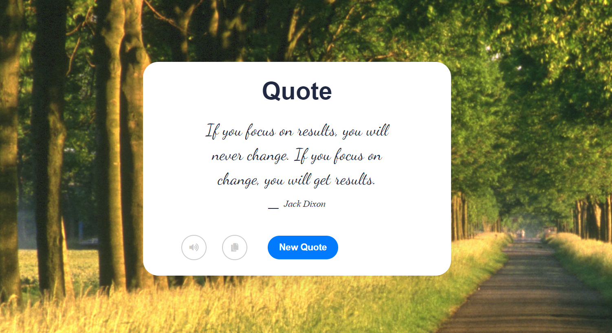

My Projects
- All
- Python
- Java
- Database
- Web
- Research
Memory Puzzle Game (Python)
I created a memory puzzle game using the python language. It is user-friendly and any person with little to no experience can play this game. It makes use of algorithms that tracks where card with a specific label, color, and shape is. It randomly chooses different cards and draws it on the grid. Then it asks the user the color and shape of the label after displaying it for few seconds. Then it compares the attributes of the card and calls different functions. It has different levels with different difficulties. The goal is to help people focus and tests your memory and brain power. I provided a documentation that includes a description of how to play the game, any challenges users might face and any limitations to this game.
Here is a link to the project:
Memory Puzzle Game
Ethiopian Recipe App (Java)

I created an Ethiopia Recipe App that allows users from around the world to learn about Ethiopian dishes. The inspiration behind developing this app was becasue I wanted to spread the word of the food I use to eat back home on the daily basis. The different kind of food is so delicious and I want people to not only now the name of these dishes but also how they are made because most of these foods are made using ingridients that people use in the western world. The app is secure as it asks for login credentials that I have provided in the Read Me on my github respository. Also it allows users to add, edit, and delete recipes. Also, I provided additional advanced features on my app such as the ability to add food to your favorite list, the ability to search for foods, and more. I designed the app as the basis for the platform for Ethiopians all around the world to contribute to it and share the delicious foods of Ethiopia.
Here is a link to the project:
Ethiopian Recipe App
Student Database (Microsoft Access and relational database)

I created a student database that makes use of tables, queries, forms, and reports. It is an automated system that allows teachers to login with their details, and access student information. It uses relational database to make changes to different forms at once. By entering student grades, the system automatically calculates different details of grades and displays the total, average, minimum, maximum scores. It also allows teachers to easily find and search students just by typing specific details. It also generates the final reports from different forms. Finally, it allows teachers to take attendance efficiently and easily track the overall attendance report of students.
Here is a link to the project:
Student Database
3D Board Creator (Java, JavaFx, and Software Development)

In my CSC 305 Software Development course, I developed a Three Game Board using Java FX. I used external or third party code libraries for creating the stage and scene for the project. I used event-based programming and GUI design, exception handling, and threading. The projects makes use of applying encapsulation, polymorphism, & inheritance concepts. I implemented use of agile methodologies for doing the project with my team and springs and milestones for divided the tasks between each other. We used github for team collaboration.
Here is a link to the project:
3D Board Creator
Quote generator (HTML, CSS, API, JavaScript)
This is a web application that generates a random quote on the page each time a user clicks the "New Quote" button. The app is built using HTML, CSS, and JavaScript. I created this application for people interested to get motivated from quotes by powerful figures. I wrote the code so the first quote it generates and one from my own. Then users have the option to copy the quote and also listen to the quote using text-to-speech software. This app used quotable API to get the random quotes.
Here is a link to the project:
Quote generator
Ethiopian Proverb Quiz (Java and Swing)
The Ethiopian Proverb Quiz is an educational app that allows users to test their knowledge of traditional Ethiopian proverbs. As an Ethiopian, I grew up hearing these proverbs from my family, and I am inspired to share them with the world. The app includes eight common Ethiopian proverbs and their associated multiple-choice questions. The user must choose the correct answer from four possible choices. The questions cover a wide range of topics, such as gender, humility, and the value of knowledge. To begin the quiz, the user is welcomed to the app and prompted to enter their name. The app then displays the first question and presents four answer choices. The user must select the correct answer within 10 seconds. If the user chooses the correct answer, they earn a point, and the app moves on to the next question. At the end of the quiz, the user receives their score as a percentage of the number of correct answers. The app also displays the total number of questions and the number of questions answered correctly. The app interface features a text field for displaying the questions, a text area for displaying the user's name and score, and four buttons for selecting the answer choices. The app also includes a countdown timer that displays the remaining time for each question. Overall, the Ethiopian Proverb Quiz is an excellent tool for anyone interested in learning about Ethiopian culture and traditions.
Here is a link to the project:
Ethiopian Proverb Quiz
To do list generator (HTML, CSS)
This web application is an efficient and user-friendly app that is built with precision and excellence using HTML and CSS. This app provides you with the capability to create, organize and manage your tasks effortlessly. The intuitive interface of the app ensures a seamless and smooth user experience, enabling you to easily add or remove tasks as per your convenience. The app caters to a wide range of users, making it accessible to everyone, and allowing you to keep track of all your tasks without any limitations. Finally, it allows you to take control of your day-to-day activities.
Here is a link to the project:
To do list generator
English to Amharic Language assessment (Python and PyQt5)

The Amharic Language Learning App is a software application designed to help people learn basic
day-to-day words in Amharic, the official language of Ethiopia.
Amharic is the only language in Ethiopia, and yet it is not widely known or recognized outside
of the country.
This app aims to promote and spread awareness of this beautiful language to the world. The app
features a graphical user interface (GUI) built using PyQt5, a popular Python library for
developing desktop applications.
The GUI consists of a main window with several widgets, including a question label, an answer
field, a submit button, a feedback label, a progress bar, a correct answer label, and an image
label.
The app presents six questions, each asking for the Amharic translation of a basic English word
or phrase, such as "hello", "bye", "thank you", and "yes".
The app provides the correct answers for each question, along with an image depicting the word
or phrase in Amharic script.
The user enters their answer into the answer field and clicks the submit button to check their
answer.
The progress bar updates after each question.
If the user's answer is correct, the app displays a green "Correct!" message.
If the user's answer is incorrect, the app displays a red "Incorrect." message and provides the
correct answer along with an image label.
The app continues to present questions until all six questions have been answered, at which
point the app displays a score message with the number of correct answers and a percentage
score.
Overall, the Amharic Language Learning App is a simple yet effective tool for introducing users
to the basics of Amharic, and for promoting the beauty and richness of this unique language.
Here is a link to our project
Amharic Language Quizzer App
Undependant Rock Island Research Project (Python, Google Earth, Microsoft Excel)
I worked on a python research project with a faculty member. This project started in 2016, was updated in 2019 but was not continued and had few bugs. I joined the team in 2022. The purpose of this project was to find out people's preference in walking or biking in the Rock Island area, how physically active people were, and to encourage people to walk/bike. The python file outputs all the details regarding which areas people enjoyed walking/biking frequently vs areas people avoid based on the different calculations such as the mode and other criterias. Such criterias include the specific reasons people do certain things. For example, people walking/biking to get things done/going for a walk/would consider walking/biking in the area. Within each criteria we would also consider walking only in the side walks and walking in streets and side walks. We would map the route on google earth during the hand conversations and the python file uses an algorithym to generate the street blocks and colors for the routes based on the rating for that specific block. The python would also generate a conversations folder and compilations folder to distinguish the different criterias.
Here is a link to our project:
Undependant Rock Island
Research Paper on Exploring Technical Capabilities of Unmanned Aerial Vehicles

I wrote this research paper with a faculty member in the computer science department in my school. The paper was about exploring the capabilities of UAVs in different industries. We studied the risks and evaluated the security concerns of these UAVs and found surprising results. We also ended the paper recommending the next moves for these UAVs and suggested ideas for further research. Our paper was published by accepted and recommended for publication in Springer by the ICISS 2023. It was then accepted for virtual presentation. I will provide the link of the presentation that I gave down in the link below:
Here is a link to the presentation:
Presentation
Here is a link to the paper:
Paper
Research Paper on Prevention and Detection of Network Attacks: A Comprehensive Study

I wrote this research paper with a group of my computer science peers in my school. The paper was about studying the prevention and detection of Network Attacks. It focused on cyber attacks such as DDos Attacks, man-in-the-middle attacks, injection attack, brute Force Attack, and more. We also studied further how AI is used to create cyber attacks and how AI is used in cyber attack defense. Finally, we explored the consequences and presented our results. We found IRP preventions and Machine learning methods to detect cyber attacks. We realized that for different type of cyber attack, a different detection mechanism can more effective than the other. Our full paper that was submitted to ICDSST 2023 was accepted for publication in the Springer book series of LNBIP.
Here is a link to the paper:
Paper